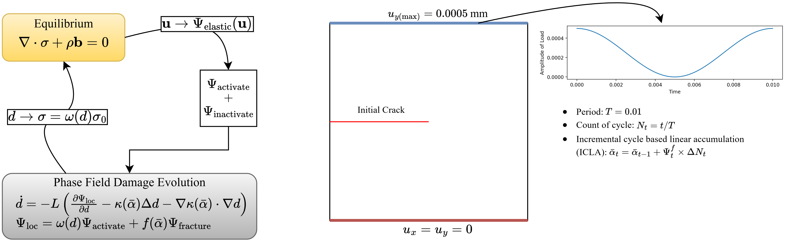
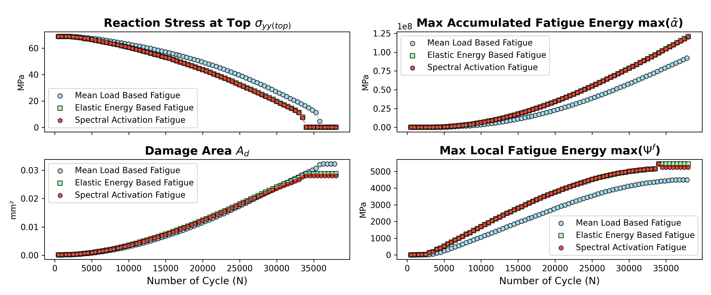

🥱 2D High-Cycle Fatigue by Different Energy Formulations
🚀 Fatigue Mechanism in Phase Field Fracture Mechanics
The modified phase field governing equation to account for fatigue effect can be formulated by introducing a fatigue degradation function \(f(\bar\alpha)\): \[\dot d = -L\left(\frac{\partial \Psi_{\text{loc}}}{\partial d} - \kappa(\bar\alpha)\Delta d - \nabla\kappa(\bar\alpha) \cdot \nabla d\right)\] where \(\Psi_{\text{loc}} = \omega(d)\Psi_{\text{activate}} + f(\bar\alpha)\Psi_{\text{fracture}}\). Basically, this is equivalent to applying \(f(\bar\alpha)\) to the original critical energy release rate \(G_{c(0)}\), i.e., \(G_c = f(\bar\alpha)G_{c(0)}\).
⚠️ The fatigue degradation function is defined as:
\[
f(\bar{\alpha}) = \begin{cases}
1, & \bar{\alpha} \leq \alpha_{\text{critical}} \\
\left( \frac{2 \alpha_{\text{critical}}}{\bar{\alpha} + \alpha_{\text{critical}}} \right)^2, & \bar{\alpha} > \alpha_{\text{critical}}
\end{cases}
\]
where \( \alpha_{\text{critical}} = 62.5\,\text{MPa} \).
This function gradually reduces the material toughness once the accumulated fatigue energy \( \bar{\alpha} \) exceeds the critical threshold.
In early stages, \( f(\bar{\alpha}) = 1 \), meaning no degradation. Once \( \bar{\alpha} > \alpha_{\text{critical}} \), the toughness smoothly drops, which mimics fatigue-induced weakening.
⚠️ The fatigue accumulation, denoted by \(\bar\alpha\), is computed using an incremental cycle-based linear accumulation (ICLA) rule. At a specific step \(t\), it is defined as: \(\bar\alpha_t = \bar\alpha_{t-1} + \Psi^f_t \times \Delta N_t\), where \(\Psi^f_t\) is the instantaneous fatigue energy at step \(t\), and \(\Delta N_t = N_t - N_{t-1}\) is the increment in cycle count.
⚠️ The instantaneous fatigue energy \( \Psi^f_t \) is computed using the following three formulations.
1. Mean Load Approach:
\[
\Psi_t = 2E\epsilon_{\text{max}}^2 \left(\frac{1+R}{2}\right)^2 \left(\frac{1+R}{2}\right)^n
\]
where \( \epsilon_{\text{max}} \) is the maximum principal strain. The loading ratio \( R=0.5 \) and exponent \( n=0.5 \) are adopted.
2. Elastic Energy Approach:
\[
\Psi_t = 0.5 \boldsymbol{\sigma} : \boldsymbol{\epsilon}
\]
3. Spectral Activation Approach:
\[
\Psi_t = 0.5 \boldsymbol{\sigma}^+ : \boldsymbol{\epsilon}
\]
where \( \boldsymbol{\sigma}^+ \) is the tensile-activated component from spectral decomposition.
🚀 Multi-Physics System and Boundary Conditions

🔑 Key Highlights
✅ This is a metallic material with \(E = 210\,\text{GPa}\), \(\nu = 0.3\). Therefore, the AT2 model is adopted, i.e., \(\alpha(d) = d^2\) and \(c_0 = 2\).
✅ The simulation includes 38,000 cycles to evaluate fatigue-induced degradation.
✅ Stress spectral decomposition is used to split the elastic energy into activated and inactivated components.
⚠️ Note 1: The energy terms are scaled by fatigue degradation: \(\kappa = f(\bar\alpha)\frac{2G_{c(0)}l}{c_0}\) and \(\frac{1}{c_0}\frac{f(\bar\alpha)G_{c(0)}}{l}\alpha(d)\). This is equivalent to applying \(f(\bar\alpha)\) directly to \(G_{c(0)}\).
⚠️ Note 2: Reminder: \(\bar\alpha\) denotes accumulated fatigue energy, while \(\alpha(d)\) is the crack geometric function.
📊 Simulation Results (Click figure to see animation)

Mean Load Based Approach

Elastic Energy Based Approach

Spectral Activation Approach

Performance Comparison
✅ The macro-mechanical behaviors are approximately the same.
✅ The mean load approach offers greater flexibility by adjusting load ratio \(R\) and exponential coefficient \(n\).
✅ The reason why \(f(\bar\alpha)\) doesn’t spread to the left is because the pre-existing crack absorbs most of the deformation there, leading to minimal fatigue degradation.